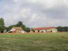
Blond, entre Limoges et Bellac, une belle région, avec les pittoresques Monts de Blond et des fermes splendides comme La Libarderie. Le festival couvre cerfs-volants, ULMs, parachutes et paramoteurs, autogires et tout ce qui s'y rattache.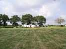
Vendredi après-midi, les campings-cars commencent à arriver et à choisir leurs places à l'ombre des chênes, il fait chaud...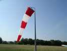
Les terrains sont vastes, parkings, terrains pour cerfs-volants et piste pour les aéronefs de tous types, mais pas trop gros...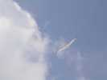
Puisqu'on est là, on fait voler un peu ! Mon Albatros 2 a un peu de mal à rester en l'air, le vent est moyen faible...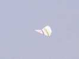
Raymond a sorti son Jessica 14, plus adapté.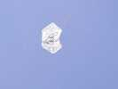
Et un rokkaku à tout hasard, pour attirer le Zef !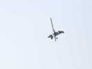
Le samedi, fin prêts. Les autogires commencent à arriver et à montrer leurs possibilités...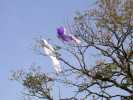
L'équipe des rouleurs de char est arrivée aussi et a décoré le ciel hier soir... Ce matin, faudra bosser !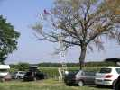
Bon, l'échelle est là, qui est-ce qui monte... euh ! Enfin les voiles seront sauvées mais il y aura d'autres accrochages, en particulier avec les monofils pour se faire de la place, ce qui est très choquant dans notre monde...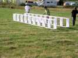
Michel-Marie a réalisé un beau et fin cellulaire. Le montage est un peu long, bien sûr, mais pas très complexe...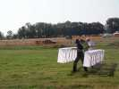
Au début, on le transporte avec précautions... sans se prendre les pieds dans les 30 m de brides (10 fois = 300 m de ficelle !) qui décorent et stabilisent, comme pour les Edo.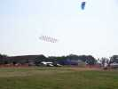
Finalement, il vole bien, même s'il ne ressort pas beaucoup aujourd'hui sur le ciel blanc...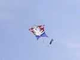
Dans un autre style, ce chat-tigre pentagonal a une belle queue... de vache !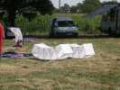
Jean-Pierre a amené ses beaux cellulaires courbes de HQ...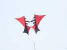
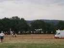
Parallèlement à la piste, Joël a monté ses moulinets musicaux, au milieu d'autres de collègues moins connus des cervolistes d'au-dessus de la Loire !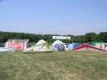
La FFVL a aussi monté son stand, mais ici, elle s'occupe... de Vol Libre et ne se mêle pas des cerfs-volants...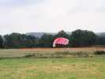
Il y aura toutes les disciplines du parachute, avec démonstrations, cassettes de formation, etc... On gonfle des voiles sur le terrain pour s'échauffer et tenter de séduire...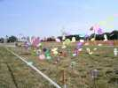
Hormis Joël et François, il y a des jardiniers volumineux, avec ces ensembles de disques qui tournent d'un tas de façons possibles...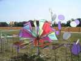
Avec aussi cette belle sphère, moulinet à 3 dimensions, mais qui ne tournait pas quand je suis passé (faute de vent ?) !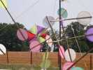
L'auteur avait aussi réalisé ces moulins tournant sur des axes fixes ou simplement enfilés sur des ficelles tendues.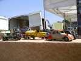
Au sol, un embouteillage ? Non, une vente de vieilles maquettes en métal de voiture d'antan...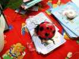
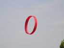
Un beau Circo très pur et qui a super-bien volé...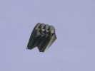
Les Awita sont là, avec un nouveau porteur, toujours flow-form, et aussi baladeur que les violets, mais noir funèbre (peut-être pour ne pas attirer l'attention sur sa présence, ou parce que personne n'en voulait ?)...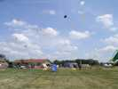
Mais ils ont aussi monté leurs deltas jaunes, dont l'un est d'ailleurs parti vivre sa vie dans un thermique qui l'a monté à perte de vue avec sa ligne et son petit sac ! Ca faisait du monde en l'air, tant mieux, parce que le samedi, avec les charistes qui défendaient le terrain, les monofils étaient plutôt restés dans les sacs...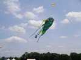
Les Awita avaient tout leur bestiaire : la grande raie, le poisson vert...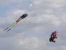
...le Nounours.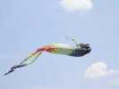
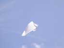
Jean-Claude a créé un pseudo-Rokkaku blanc, pour faire de la photo par vent faible. Pseudo parce que la vergue arrière est plus courte que celle de l'avant ! Le CV est chatouilleux et se tortille par vent plus soutenu : normal, il est juste bridé 2 points !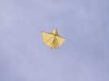
Gilles Poutoux avait fait un Jessica 14 techniquement impeccable ! Résultat, il volait impeccablement, bien sûr. Il a été emballé par la facilité de la chose, même pour un novice !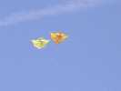
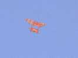
Ce Saconney a montré une grande stabilité.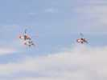
Les autogires ont même fait la démonstration d'une patrouille "de France", c'est la seule ! Pas très violente quand même, la démo...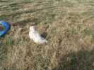
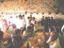
Le soir, repas dans la grange, servi par la main des Grâces.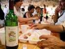
L'apéritif est offert, le vin à volonté, il est même millésimé et dédié à Estivol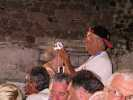
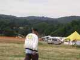
Fernando a sorti son blouson décoré CVCF pour atténuer la fraîcheur du soir.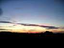
Et le soleil se couche sur les Monts de Blond... mais il y aura un vol de nuit, avec projecteurs, cette année, le luxe s'installe !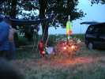
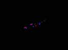
Joël a luminisé son avion avec des diodes toutes simples et colorées ! Les cerfs-volants ont bien volé dans une brise légère mais régulière. Ils n'ont pas été trop éclairés, malgré la "poursuite" qui a surtout suivi les pilotables.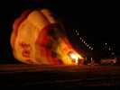
Il aurait fallu, en plus, un peu d'éclairage général même pas très puissant, mais dirigé vers le haut. En fin de vol, les montgolfières commencent à se gonfler, pendant qu'une double guirlande de lampions continue à s'élever !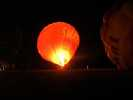
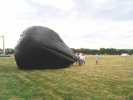
Dimanche matin tôt, pas trop de vent, on essaye les ballons solaires. Jean-Claude gonfle le sien mais ça ne veut pas monter.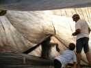
Jean-Marc détecte une fuite de plusieurs cm, et avec le vent, ça renouvelle l'air à l'intérieur et il ne chauffe pas assez. Alors JC entre à l'intérieur, le scotch à la main pour mettre une rustine...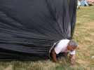
Ca y est, la bête sort de sa coquille, celle-ci est réparée...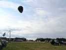
Hé bien voilà, ça marche ! Décollage jusqu'à 20 m, mais le vent monte un peu et il faudra redescendre...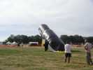
Joël, entraîné par l'exemple, sort son pingouin. Il se gonfle bien, mais ne décollera pas, trop de vent, et évidemment, le rendement est moindre que la sphère de JC !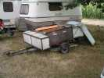
Bon, il va falloir sortir du matos ! Jean-Marc en a plein sa remorque spéciale, rallongée devant, rallongée derrière, avec un tube dessous (fermant à clé !) pour les barres jusqu'à 2 m... Elle doit bien peser une tonne !